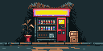

처음 내린 승객을 위한 안내서 · 앱 1.1.3 기준 · 2026년 11월 26일 갱신
시작 가이드
Neon Station은 켜 두면 캐릭터가 알아서 싸우는 방치형 RPG입니다. 하루 몇 분만 들여다봐도 충분합니다. 이 페이지만 읽으면 첫날 무엇을 하면 되는지, 언제 무엇이 열리는지 알 수 있습니다.

어서 오세요, 러너. 저는 0번 승강장의 안내 드론입니다. 게임 안에서도 메뉴에 처음 들어갈 때마다 제가 짧게 길을 알려 드립니다. 이 페이지는 그 내용을 한곳에 모은 것입니다.
1설치하기
안드로이드 비공개 테스트
- Google Play 정식 출시 전이라 지금은 테스터로 참여합니다.
- 인스타그램 @_neon_station에 「테스터 신청」 DM을 보내면 참여 방법을 안내해 드립니다.

진행은 기기 안에 저장됩니다. 휴대폰을 바꾸거나 앱을 지울 계획이라면 프로필 › 계정 연동에서 Google 또는 Apple 계정을 연결해 두세요. 진행이 서버에 자동으로 백업되고 새 기기에서 불러올 수 있습니다(1.1.1부터).
2첫 10분
처음 켜면 세 무리 중 하나를 고릅니다. 어느 쪽을 골라도 장비와 외형은 똑같이 모을 수 있으니 마음에 드는 쪽을 고르면 됩니다. 차이는 시작 무기와 작은 패시브 보너스입니다.


- 인트로를 본다7컷짜리 짧은 이야기가 나옵니다. 건너뛰어도 되고, 나중에 프로필 › 설정에서 다시 볼 수 있습니다.
- 전투가 알아서 돌아가는 걸 확인한다1구역 러스트 하수구에서 자동 사냥이 시작됩니다. 아무것도 누르지 않아도 갱단을 쓰러뜨리고 코인이 쌓입니다.
- 코인이 모이면 무기상과 거래한다[에드온] › [무기상]에서 코인으로 거래하면 무작위 장비가 나옵니다. 처음부터 열려 있습니다.
- ▲ 표시가 붙은 장비를 입는다▲는 장착하면 전투력이 오르는 장비입니다. 입는 순간 캐릭터 모습도 바뀝니다. 남는 장비는 [일괄 판매]로 정리합니다.
- 명성으로 무기상을 올린다거래할 때마다 명성이 1씩 쌓입니다. 명성으로 무기상을 업그레이드하면 더 높은 등급이 나옵니다.
- 상점에서 무료 상자를 연다[상점]의 무료 상자는 매일 오전 9시에 새로 열립니다. 처음 시작하면 크레딧 100도 함께 받습니다.
3화면 둘러보기
화면 아래에 탭이 다섯 개 있습니다. 위쪽에는 레벨, 전투력, 재화가 보이고, 왼쪽 위 프로필 그림을 누르면 프로필이 열립니다.

하단 탭 1
전투자동 사냥과 보스전. 장착 장비, 내 스펙, 접속 보상이 여기 있습니다.
하단 탭 2
특수 의뢰재화마다 전용 의뢰가 있습니다. 의뢰마다 하루 3번 도전하거나 소탕합니다.
하단 탭 3
에드온무기상, 임플란트, 스킬트리, 펫, 파레트 빌더. 레벨이 오르면 차례로 열립니다.
하단 탭 4
온라인왼쪽 카드는 PVP(지하 투기장 피트), 오른쪽 카드는 라인(길드)입니다.
하단 탭 5
상점무료 상자, 크레딧 상품, 자동 뽑기, PVP 도전권, 의뢰 추가 입장.
왼쪽 위 프로필
프로필칭호, 랭킹, 계정 연동, 쿠폰 입력, 게임 가이드, 언어 설정.
전투 화면 아래 채팅 바를 누르면 전체 채팅이 열립니다. 다른 러너의 이름을 누르면 프로필을 보고 친선 결투를 걸 수 있습니다.
4성장 순서
게임의 큰 흐름은 하나입니다. 사냥으로 모은 코인으로 장비를 바꾸고, 강해진 만큼 더 깊은 구역으로 내려갑니다.
- 사냥켜 두면 자동. 꺼 둬도 최대 3시간 쌓임
- 코인사냥 · 오프라인 보상 · 금고 습격
- 무기상 거래코인 → 무작위 장비, 거래마다 명성 +1
- 장착▲ 장비로 바꾸면 전투력과 모습이 함께 바뀜
- 다음 구역보스를 넘어 10구역 데이터 코어까지
그리고 명성 → 무기상 업그레이드 → 더 높은 등급 → 다시 거래.
구역마다 스테이지 20개, 스테이지마다 웨이브 5개가 있습니다. 10 · 20스테이지는 보스전입니다. 지면 그 스테이지를 처음부터 다시 하니, 막히면 장비를 바꾸고 다시 도전하세요. 10구역 보스를 쓰러뜨리면 더 강해진 도시가 다시 시작됩니다.
5레벨별로 열리는 것
계정 레벨
전투 경험치로 오르는 레벨입니다. 잠긴 메뉴에는 셔터와 해금 레벨이 보이고, 열리면 알림이 뜹니다.
- Lv1무기상 · 특수 의뢰 · PVP · 상점특수 의뢰 「갱단 금고 습격」(코인), 「해결사 의뢰」(명성)부터 시작합니다.
- Lv5임플란트크롬으로 신경 · 골격 · 지능 임플란트를 시술합니다. 「사이보그 폐기장」(크롬) 의뢰가 함께 열립니다.
- Lv10스킬트리 · 라인칩으로 스펙 · 의뢰 · PVP · 임플란트 · 펫 · 에드온 여섯 계열의 스킬을 올립니다. 「중계 서버 해킹」(칩) 의뢰가 열리고, 온라인 탭에서 길드 라인에 탈 수 있습니다.
- Lv15펫식량으로 로봇 펫과 드론 55종(등급마다 5종)을 입양합니다. 「보급 트럭 탈취」(식량) 의뢰가 열립니다.
- Lv20파레트 빌더외형 도감, 도색, 스타일 태그, 시그니처 세트.
- Lv50임플란트 2번째 칸계열마다 두 번째 칸이 열립니다.
무기상 레벨과 장비 등급
무기상 레벨이 그 등급의 해금 레벨에 닿아야 그 등급이 나옵니다. 무기상은 Lv50까지 오릅니다.
무기상 업그레이드에는 대기 시간이 있습니다(초반 몇 분, 후반 최대 2일). 광고를 보면 30분씩 줄일 수 있고(한 번에 2회), 크레딧으로 바로 끝낼 수도 있습니다(남은 1분당 1크레딧). 끝나면 알림이 옵니다.
6하루 할 일
대부분은 매일 오전 9시(한국 시간)에 초기화됩니다. 아래 목록은 이 브라우저에만 저장되는 체크리스트이고, 오전 9시가 지나면 저절로 비워집니다.
매주 월요일 오전 9시
- PVP 주간 순위가 확정됩니다. PVP 화면 위 「지난 주 순위 보상」에서 [보상 받기]를 누르세요. 한 번이라도 대전한 러너만 순위에 듭니다.
- 진압열차가 1호부터 다시 시작합니다. 1호 블랙아웃에서 10호 종착역까지, 단계가 오를수록 체력이 크게 늘고 보상도 커집니다. 보상은 그 열차에 넣은 피해(기여도)에 따라 나뉩니다.
7재화 6종
| 재화 | 얻는 곳 | 쓰는 곳 |
|---|---|---|
| 사냥, 오프라인 보상, 「갱단 금고 습격」 | 무기상 거래, 라인 승차권 | |
| 무기상 거래 1회마다 +1, 「해결사 의뢰」 | 무기상 업그레이드, 시그니처 세트 힌트 조각 | |
| 보스, 「사이보그 폐기장」 | 임플란트 시술 · 강화, 도면 조각 교환 | |
| 보스, 「보급 트럭 탈취」 | 펫 입양, 도면 조각 교환 | |
| 「중계 서버 해킹」, 라인 토큰 상점 | 스킬트리 | |
| 무료 상자, 처음 시작 100, PVP 주간 보상, 진압열차, 상점 충전 | 즉시 완료(1분 = 1), 자동 뽑기(20), PVP 도전권, 의뢰 추가 입장(40), 닉네임 변경(50), 라인 만들기(100) |
이 밖에 장비를 팔면 쌓이는 도면 조각(외형 해금 · 도색)과 라인 안에서만 쓰는 토큰이 있습니다. 오프라인 보상, 특수 의뢰 같은 보상은 광고를 보고 3배로 받을 수 있습니다.
8꼭 알아 둘 팁
장비가 너무 많이 쌓여요
무기상 인벤토리는 장착했을 때 전투력이 많이 오르는 순으로 정렬됩니다. [일괄 판매]는 장착해도 전투력이 오르지 않는 장비만 팝니다. 아끼는 장비는 장비 상세에서 [잠금]을 눌러 두면 판매에서 보호됩니다.
높은 등급이 안 나와요 (천장)
같은 무기상 레벨에서 200번 거래하는 동안 그 레벨의 해금 등급 이상이 한 번도 안 나오면, 다음 거래에서 해금 등급이 확정으로 나옵니다. 리퍼메딕 · 펫 브리더는 100번이고, 이 둘은 Lv15까지 올라 퀀텀(Lv12) · 보이드(Lv14) · 오리진(Lv15) 등급이 열립니다. 무기상 초상을 누르면 레벨별 확률표를 넘겨 볼 수 있고, 다른 등급별 확률도 각 화면의 「확률 정보」에서 모두 볼 수 있습니다.
근거리와 원거리, 무엇이 좋나요?
원거리는 제자리에서 쏘고, 근거리는 적 앞까지 걸어가 싸웁니다. 다가가는 동안 맞는 것을 보전하려고 근거리 무기는 받는 피해가 8% 줄고, PVP에서는 추가 보정이 붙습니다. 장비 부 옵션의 「근거리 공격력」 · 「원거리 공격력」은 장착한 무기 종류가 맞을 때만 적용되니, 무기를 바꿀 때 옵션도 함께 보세요.
시그니처 세트는 어떻게 맞추나요?
① 힌트 조각 3개로 필요한 부위와 외형을 알아냅니다(플레이하며 얻거나 명성으로 삽니다). ② 그 외형을 도감에 엽니다(장비를 얻거나 도면 조각으로 해금). ③ 필요한 칸을 모두 그 외형으로 장착하거나 도색합니다. 모두 맞는 순간 자동으로 발견되고, 세트 오라 · 세트 프로필 · 칭호를 받습니다. 세트는 40종이고, 31~40번은 상위 외형(아이템 Lv26 이상)으로 맞춥니다.
도색이 뭔가요?
파레트 빌더 › 스타일 탭에서 장비 칸에 다른 외형을 입히는 것입니다. 능력치는 그대로 두고 모습과 스타일 태그만 바뀝니다. 비용은 도면 조각이고, 지우기는 무료입니다.
휴대폰을 바꾸면 진행이 사라지나요?
계정 연동을 하지 않았다면 진행은 기기 안에만 있습니다. 프로필 › 계정 연동에서 Google 또는 Apple 계정을 연결하면 서버에 자동으로 백업되고, 새 기기에서 같은 계정으로 불러올 수 있습니다(1.1.1부터).
쿠폰은 어디서 받나요?
쿠폰 코드는 인스타그램 @_neon_station과 이 사이트의 공지에 올라옵니다. 프로필 › [쿠폰 입력]에 넣으면 보상을 받습니다. 계정당 한 번이고 인터넷 연결이 필요합니다.
영어나 중국어로 바꾸고 싶어요
프로필 › 설정 › 언어에서 한국어 · English · 中文(简体)를 고릅니다. 바로 적용됩니다. 채팅 글과 닉네임은 번역하지 않습니다.
채팅에서 불쾌한 글을 봤어요
그 사람의 이름을 눌러 프로필을 열고 [신고] 또는 [차단]을 누르세요. 신고는 운영자가 확인하고, 신고가 여러 번 들어온 글은 자동으로 가려집니다. 차단한 사람의 글은 보이지 않습니다.
9용어
- 러너
- 플레이어. 게임 속 이름은 칩이 빈 「널」입니다.
- 에드온
- 0번 승강장의 상인과 성장 메뉴를 모은 탭.
- 피트
- 지하 투기장. PVP를 하는 곳.
- 라인
- 길드. 라인장은 기관사, 부라인장은 차장.
- 진압열차
- 매주 1호부터 10호까지 차례로 내려오는 라인 보스.
- 천장
- 정해진 횟수 안에 좋은 등급이 안 나오면 확정으로 주는 장치.
- 도면 조각
- 장비를 팔면 쌓이는 재료. 외형 해금과 도색에 씁니다.
- 공명
- 장착 5칸이 모두 같은 등급 이상일 때 붙는 보너스.
- 에코 감염
- 높은 등급 임플란트와 에너지 외형이 쌓이면 생기는 강하지만 위험한 상태.
- 소탕
- 이미 클리어한 의뢰의 보상을 전투 없이 바로 받는 것.
- 아이템 레벨
- 같은 등급 안에서의 레벨(1~50). Lv26부터 상위 외형을 입습니다.
- 신경 부하
- 임플란트 등급 합의 한도. 스킬트리 임플란트 계열로 늘어납니다.
10더 알아보기
게임 안에서도 프로필 › 게임 가이드를 누르면 메뉴별 자세한 규칙을 볼 수 있습니다. 좋은 여행 되세요, 러너.